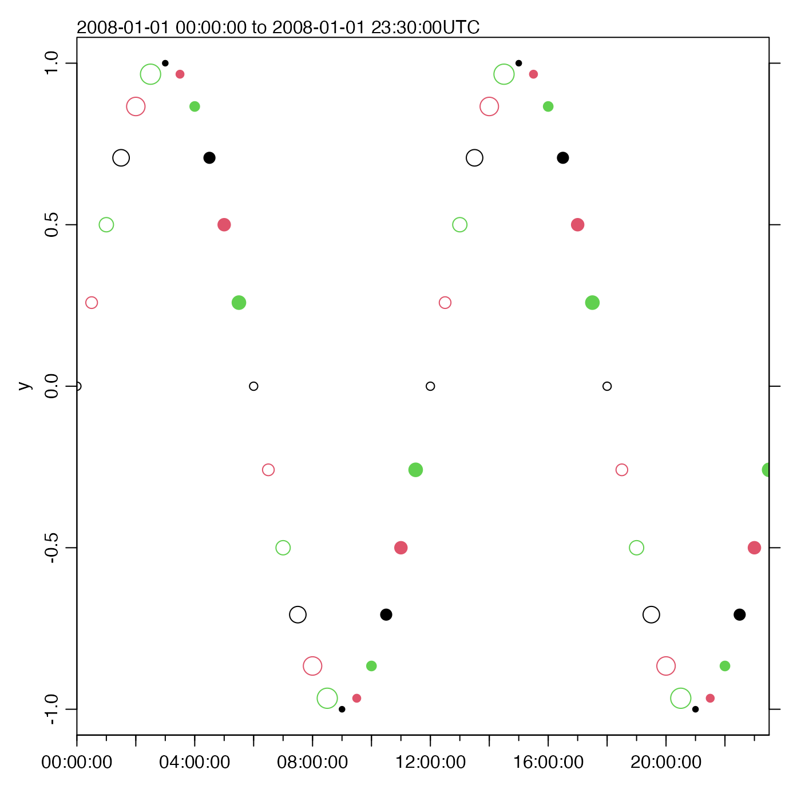

Plot a time-series, obeying the timezone and possibly drawing the range in the top-left margin.
oce.plot.ts(
x,
y,
type = "l",
xlim,
ylim,
log = "",
logStyle = "r",
flipy = FALSE,
xlab,
ylab,
drawTimeRange,
simplify = 2560,
fill = FALSE,
col = par("col"),
pch = par("pch"),
cex = par("cex"),
cex.axis = par("cex.axis"),
cex.lab = par("cex.lab"),
cex.main = par("cex.main"),
xaxs = par("xaxs"),
yaxs = par("yaxs"),
mgp = getOption("oceMgp"),
mar = c(mgp[1] + if (nchar(xlab) > 0) 1.5 else 1, mgp[1] + 1.5, mgp[2] + 1, mgp[2] +
3/4),
main = "",
despike = FALSE,
axes = TRUE,
tformat,
marginsAsImage = FALSE,
grid = FALSE,
grid.col = "lightgray",
grid.lty = "dotted",
grid.lwd = par("lwd"),
debug = getOption("oceDebug"),
...
)the times of observations. If this is not a POSIXt object, then an
attempt is made to convert it to one using as.POSIXct().
the observations.
plot type, "l" for lines, "p" for points.
optional limit for x axis. This has an additional effect, beyond that for conventional R functions: it effectively windows the data, so that autoscaling will yield limits for y that make sense within the window.
optional limit for y axis.
a character value that must be either empty (the default) for linear
y axis, or "y" for logarithmic y axis. (Unlike
plot.default() etc., oce.plot.ts does not permit
logarithmic time, or x axis.)
a character value that indicates how to draw the y axis, if
log="y". If it is "r" (the default) then the conventional R style is used,
in which a logarithmic transform connects y values to position on the "page"
of the plot device, so that tics will be nonlinearly spaced, but not
organized by integral powers of 10. However, if it is "decade", then
the style will be that used in the scientific literature, in which large
tick marks are used for integral powers of 10, with smaller tick marks
at integral multiples of those powers, and with labels that use exponential
format for values above 100 or below 0.01. The value of logStyle is passed
to oceAxis(), which draws the axis.
Logical, with TRUE indicating that the graph
should have the y axis reversed, i.e. with smaller values at
the bottom of the page.
name for x axis; defaults to "".
name for y axis; defaults to the plotted item.
an optional indication of whether/how to draw a time range,
in the top-left margin of the plot; see oce.axis.POSIXct() for details.
an integer value that indicates
whether to speed up type="l" plots by replacing the data
with minimum and maximum values within a subsampled time mesh.
This can speed up plots of large datasets (e.g. by factor 20 for 10^7 points),
sometimes with minor changes in appearance.
This procedure is skipped if simplify is NA or
if the number of visible data points is less than 5 times simplify.
Otherwise, oce.plot.ts creates simplify intervals ranging across
the visible time range. Intervals with under 2 finite
y data are ignored. In the rest, y values
are replaced with their range, and x values are replaced
with the repeated midpoint time. Thus, each retained sub-interval
has exactly 2 data points.
A warning is printed if this replacement is done.
The default value of simplify means that cases with
under 2560 visible points are plotted conventionally.
boolean, set TRUE to fill the curve to zero (which it
does incorrectly if there are missing values in y).
The colours for points (if type=="p") or lines (if type=="l").
For the type="p" case,
if there are fewer col values than there are x values, then the col values
are recycled in the standard fashion.
For the type="l" case, the line is plotted in the first colour specified.
character code, used if type=="p".
If there are fewer pch values than there are x values, then the pch values
are recycled in the standard fashion.
See points() for the possible values for pch.
numeric character expansion factor for points on plots, ignored unless
type is "p". This may be a single number, applied to all points, or
a vector of numbers to be applied to the points in sequence. If there are
fewer pch values than there are x values, then the pch values are recycled
in the standard fashion. See par() for more on cex.
numeric character expansion factors for axis numbers,
axis names and plot titles; see par().
control x axis ending; see par("xaxs").
control y axis ending; see par("yaxs").
3-element numerical vector to use for par(mgp), and also
for par(mar), computed from this. The default is tighter than the R
default, in order to use more space for the data and less for the axes.
value to be used with par("mar") to set margins.
The default value uses significantly tighter margins than is the norm in R,
which gives more space for the data. However, in doing this, the existing
par("mar") value is ignored, which contradicts values that may have
been set by a previous call to drawPalette(). To get plot with
a palette, first call drawPalette(), then call
oce.plot.ts with mar=par("mar").
title of plot.
boolean flag that can turn on despiking with
despike().
boolean, set to TRUE to get axes plotted
optional format for labels on the time axis
boolean indicating whether to set the right-hand
margin to the width normally taken by an image drawn with
imagep().
if TRUE, a grid will be drawn for each panel. (This
argument is needed, because calling grid() after doing a
sequence of plots will not result in useful results for the individual
panels.
color of grid
line type of grid
line width of grid
a flag that turns on debugging. Set to 1 to get a moderate amount of debugging information, or to 2 to get more.
graphical parameters passed down to plot().
A list is silently returned, containing xat and yat,
values that can be used by oce.grid() to add a grid to the plot.
Depending on the version of R, the standard plot() and
plot.ts() routines will not obey the time zone of the data.
This routine gets around that problem. It can also plot the time range in
the top-left margin, if desired; this string includes the timezone, to
remove any possible confusion.
The time axis is drawn with oce.axis.POSIXct().
library(oce)
t0 <- as.POSIXct("2008-01-01", tz="UTC")
t <- seq(t0, length.out=48, by="30 min")
y <- sin(as.numeric(t - t0) * 2 * pi / (12 * 3600))
oce.plot.ts(t, y, type='l', xaxs='i')
# Show how col, pch and cex get recycled
oce.plot.ts(t, y, type='p', xaxs='i',
col=1:3, pch=c(rep(1, 6), rep(20, 6)), cex=sqrt(1:6))

# Trimming x; note the narrowing of the y view
oce.plot.ts(t, y, type='p', xlim=c(t[6], t[12]))
# Flip the y axis
oce.plot.ts(t, y, flipy=TRUE)